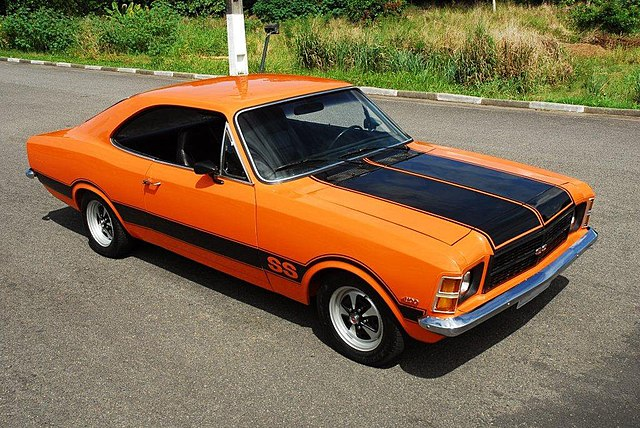
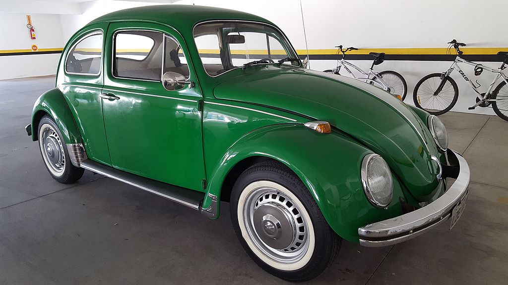
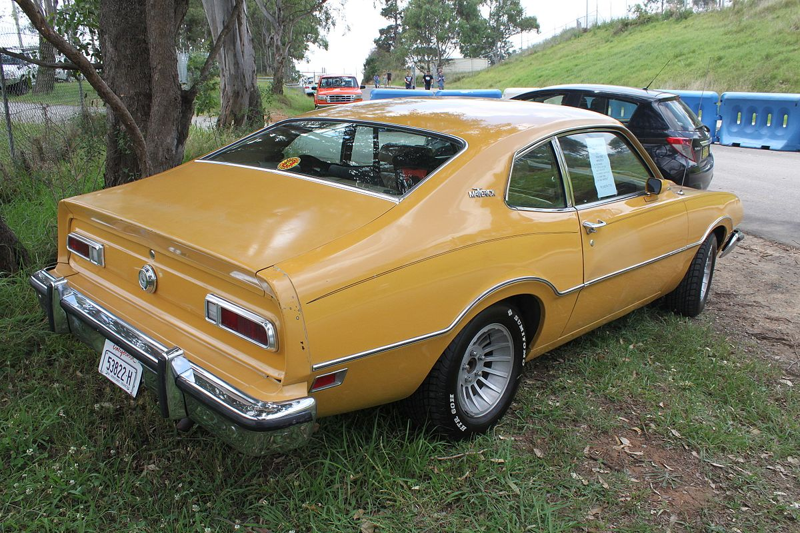
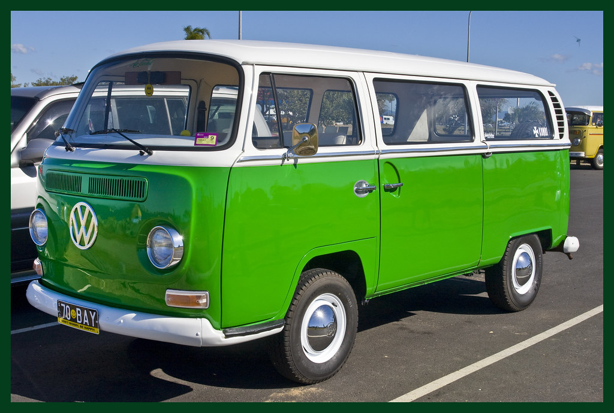
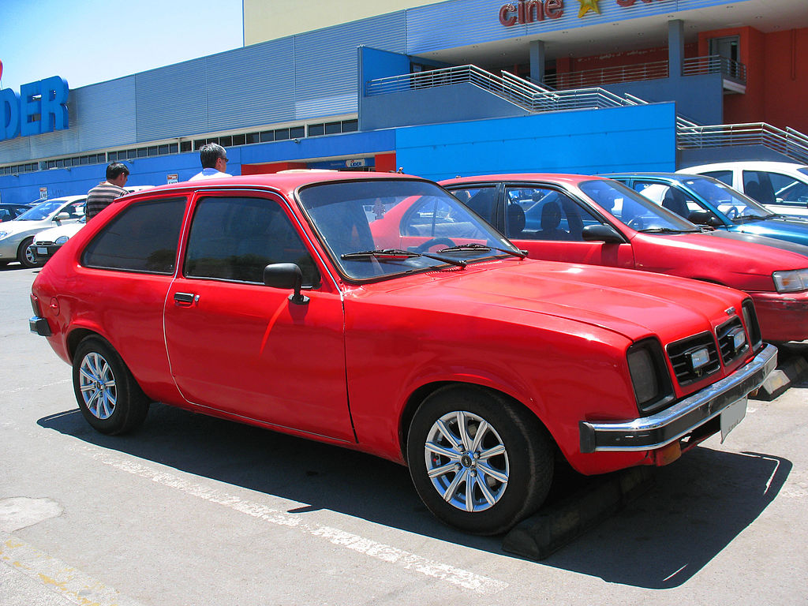
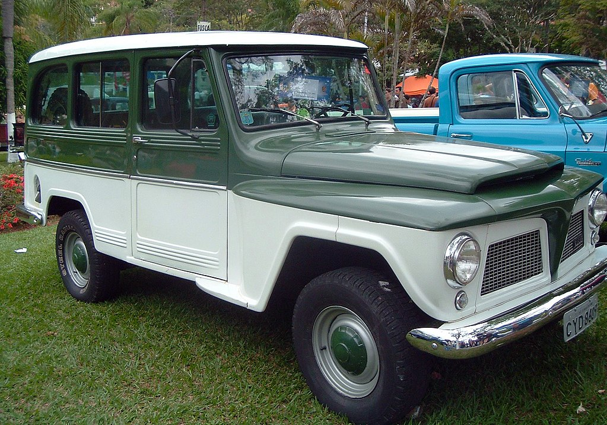

A Chevrolet C-14 foi a segunda picape GM nacional lançada em 1964, substituindo as Chevrolet 3100 mais conhecidas como Chevrolet Brasil. A C-14 teve mais duas versões: a C-15, que se diferenciava apenas pelo maior comprimento do chassi, e a C-1416, mais conhecida como Veraneio, que era um veículo misto, ou seja, um veículo onde passageiros e carga coexistem em um mesmo espaço, sendo este muito usado como viatura de polícia por muitos anos.

Com 5.232 unidades produzidas no ano de 1961, o Studebaker Lark Cruiser era a versão longa do modelo sedan da marca. Baseado na versão taxi, também chamada de Econ-O-Miler, o Cruiser trazia luxo e excelente acabamento para os viajantes do banco traseiro, que trazia mais 110mm em relação ao sedan comum

O Fiat 147 foi o primeiro carro que deu início as atividades da Fiat no país em 1976. Ele também foi seu maior trunfo e mostrou que a gigante italiana não estava para brincadeira

Começamos pelo icônico Opala, que traz até um grupo de fãs chamados de “Opaleiros”. Criado em 1968 para concorrer com Ford Galaxie e Dodge Dart, o modelo logo se popularizou e alcançou a marca de segundo veículo mais vendido. Diversas versões foram criadas, desde as mais básicas, até o Gran Luxo, de 1973.
Esse é um carro que superou a barreira das gerações. Idealizado por Ferdinand Porsche — criador do lendário Porsche 911 —, o modelo atendia às especificações impostas pela Alemanha de passar dos 100 km/h, transportar quatro pessoas, ter baixo custo e ser refrigerado a ar. Em 1934, surge o Volkswagen — carro do povo —, que se tornaria o nosso conhecido Fusca.
Outra lenda do mundo automotivo é o Ford Maverick, que ganhou ótimas versões como o Luxury Decor Option (LDO), GT e o aclamado Quadrijet, sendo esse um dos mais raros e cobiçados. Equipado com um motor 5 litros de 197 cavalos, carburador quádruplo da Holley, coletor Edelbrock e comando de válvulas esportivo, esse modelo era um carro de corrida preparado para as ruas.
Outra velha conhecida dos brasileiros, mas que ganhou um certo ar de “raridade” é a Kombi, principalmente os modelos dos anos 1960. Esse foi o primeiro veículo produzido pela Volkswagen no Brasil (1957) e o carro que ficou mais tempo em produção na história — deixou de ser fabricado em 2013.
Primeiro compacto da marca no Brasil. Equipado com um motor 1,4 litros de 68 cv, o modelo ficou famoso pela diversidade de versões disponíveis. Ele era uma ótima opção para quem precisava de um espaço que o Fusca não podia fornecer. Atualmente, ele é um dos mais comercializados no setor de carros antigos, sendo o segundo da lista.
Este carro foi lançado na década de 70, no formato Sedan e Coupê. Ele era um forte concorrente do Opala e Maverick, disputavam diretamente o posto de carro mais desejado do mercado.
Uma de suas características marcantes é a alta potência de seu motor 5.2 V8 que rendia até 205CV. Esse carro parou de ser produzido em 1981, por isso é mais raro você encontrá-lo no mercado de usados, seus preços podem variar de R$ 30 mil até R$ 260 mil, isso depende muito do modelo e versão do carro.
O Rural Willys é, sem dúvidas, um dos utilitários mais icônicos já comercializados no mercado brasileiro. Ele foi praticamente o precursor dos utilitários vendidos atualmente, sendo considerado por muitos como o primeiro SUV à venda por aqui.
